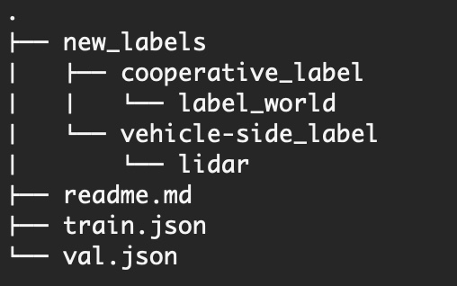
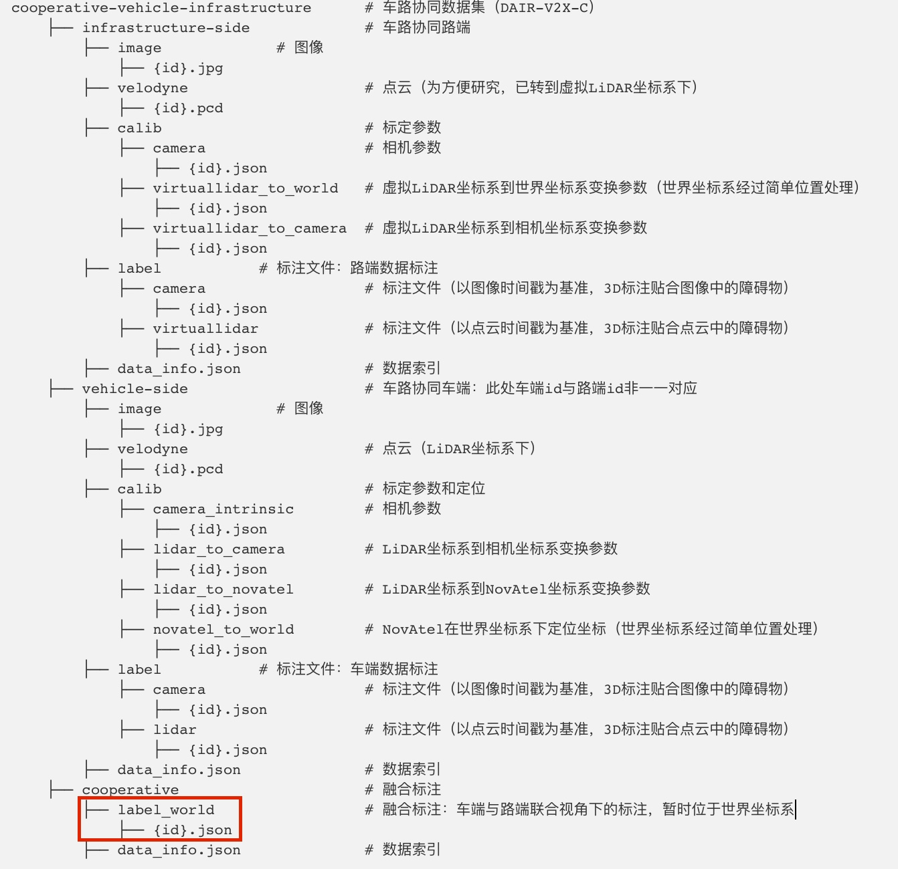

About
Originally DAIR-V2X only annotates 3D boxes within the range of camera's view in vehicle-side. We supplement the missing 3D box annotations to enable the 360 degree detection. With fully complemented vehicle-side labels, we regenerate the cooperative labels for users, which follow the original cooperative label format.
|
|
|


Usage:
Download the annotations files from Google Drive, which contains complemented vehicle-side labels, cooperative labels and individual train/val split files from official splits. Suppose you have downloaded the DAIR-V2X-C dataset and unzip it underYOUR_DAIR_V2X_C_PATH.

Step 1: Vehicle side annotations
replaceYOUR_DAIR_V2X_C_PATH/cooperative-vehicle-infrastructure/vehicle-side/label/lidar with provided new_labels/vehicle-side_label/lidar.

Step 2: Cooperative annotations
replaceYOUR_DAIR_V2X_C_PATH/cooperative-vehicle-infrastructure/cooperative/label_world with provided new_labels/cooperative_label/lidar_world.

Step 3 (optional): individual splits
put providedtrain.json and val.json under YOUR_DAIR_V2X_C_PATH/cooperative-vehicle-infrastructure/. These are just individual splits from official splits. Notice that the original train split contains one frame (vehicle frame id "002234") without infrastructure files, so we omit it in `train.json`.